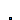
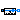
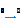

Base classes used in the Sensors package (only of interest to build new component models)
Extends from Modelica.Icons.BasesPackage (Icon for packages containing base classes).
| Name | Description |
|---|---|
|  PartialAbsoluteSensor | Partial component to model a sensor that measures a potential variable |
|  PartialRelativeSensor | Partial component to model a sensor that measures the difference between two potential variables |
|  PartialFlowSensor | Partial component to model sensors that measure flow properties |
Partial component to model a sensor that measures a potential variable
Partial component to model an absolute sensor. Can be used for pressure sensor models.
Use for other properties such as temperature or density is discouraged, because the enthalpy at the connector can have different meanings, depending on the connection topology. Use PartialFlowSensor instead.
as signal.
| Name | Description |
|---|---|
| replaceable package Medium | Medium in the sensor |
| Name | Description |
|---|---|
| replaceable package Medium | Medium in the sensor |
| port |
Partial component to model a sensor that measures the difference between two potential variables
The relative pressure "port_a.p - port_b.p" is determined between the two ports of this component and is provided as output signal. The sensor should be connected in parallel with other equipment, no flow through the sensor is allowed.
Extends from Modelica.Icons.TranslationalSensor (Icon representing a linear measurement device).
| Name | Description |
|---|---|
| replaceable package Medium | Medium in the sensor |
| Name | Description |
|---|---|
| replaceable package Medium | Medium in the sensor |
| port_a | |
| port_b |
Partial component to model sensors that measure flow properties
Partial component to model a sensor that measures any intensive properties
of a flow, e.g., to get temperature or density in the flow
between fluid connectors.
The model includes zero-volume balance equations. Sensor models inheriting from
this partial class should add a medium instance to calculate the measured property.
Extends from Modelica.Fluid.Interfaces.PartialTwoPort (Partial component with two ports).
| Name | Description |
|---|---|
| replaceable package Medium | Medium in the component |
| Assumptions | |
| allowFlowReversal | = true to allow flow reversal, false restricts to design direction (port_a -> port_b) |
| Advanced | |
| m_flow_nominal | Nominal value of m_flow = port_a.m_flow [kg/s] |
| m_flow_small | Regularization for bi-directional flow in the region |m_flow| < m_flow_small (m_flow_small > 0 required) [kg/s] |
| Name | Description |
|---|---|
| port_a | Fluid connector a (positive design flow direction is from port_a to port_b) |
| port_b | Fluid connector b (positive design flow direction is from port_a to port_b) |